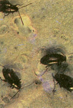
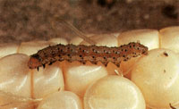
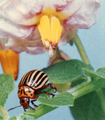
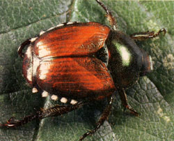
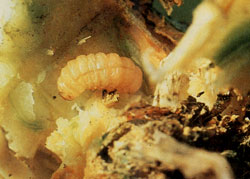
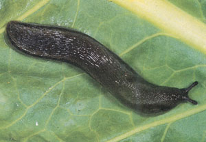
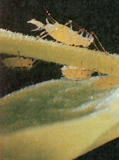
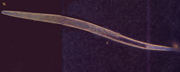

Has your lettuce been slugged?
Are your squash bored? Are there felons in your melons? When horticultural hoodlums start moving in on your turf, you'd better know how to (biologically) defend your plants!
Note: This listing does not include smalltime, penny-ante bugs that cry uncle if you squirt 'em once with a hose. Nope, these are the true crop criminals who ruthlessly ransack garden after garden, year after year. To save your tender, sweet young growings from these rapacious repeat offenders, you've got to identify the crawly culprits early and fight them tenaciously. And to help you in those efforts, We're including the best organic countermeasures we know for tackling the top nine unwanted garden pests.
a.k.a. "Machine Gun Billie," "Hole Punch," "Fleazy," "The Radish Ravager," "King Flea"
Range: Everywhere
Description: Very small black or brown beetle that leaps like a flea when disturbed at the scene of the crime.
Modus Operandi: Chews leaves so full of small holes that they look like they were used for automaticweapons target practice. Roughest on young leaves and during the early part of the growing season.
Favorite Victims: Eggplant, potatoes, brassicas, and radishes.
Tactics for Control: Sprinkle wood ashes on damp plants . . . spread crushed elderberry or tomato leaves throughout the growing area . . . cultivate soil after harvest to kill eggs . . . provide shade and moisture (which flea beetles dislike) by keeping soil moist, watering in full sunlight, and interplanting vulnerable crops among taller ones . . . use garlic, catnip, mint, or wormwood as companion plants or in tea sprays.
a.k.a. "Tomato Fruitworm," "Genghis Corn," "Silk," "The Kernel Kid," "Earache," "Al Cornpone"
Range: Everywhere
Description: A 1-1/2" caterpillar with dark (prison) stripes down either side. Usually garbed in green or white, but may disguise itself with other colors.
Modus Operandi: Breaks into corn ears and tomato stems and munches down. Also assaults leaves and buds. Favorite Victims: Corn, tomatoes, squash, potatoes, beans, peas, peppers, and okra.
Tactics for Control: Apply dropperfuls of mineral oil, half mineral oil and half pyrethrum, or dissolved BT to corn ears immediately when corn tassles wilt and start to turn brown . . . dust corn ears with BT . . . use Trichogramma wasps or tachinid flies as predators.
a.k.a. "Tater Ater," "The Colorado Killer," "CoPo," "Hud Spud," "Stripes"
Range: Upper twothirds U.S. and in Canada
Description: Adult-1/3"-long, hard-shelled round beetle with orange, black-dotted head and black and yellow striped body. Larva-plump, pinkish orange crawling insect with black head and legs and a double row of black spots down each side.
Modus Operandi: Both stages (the kid takes after his old man) chow down on leaves.
Favorite Victims: Potatoes, eggplant, tomatoes, and peppers.
Tactics for Control: Handpick . . . interplant green beans and potatoes (each repels the other's main pest) . . . sprinkle bran on damp leaves (the spud spoilers scarf it down and die when it swells) . . . interplant repellants such as horseradish (especially repulsive), flax, marigolds, or garlic . . . put down a deep hay mulch to create a larvae roadblock . . . recruit toads and ground beetles (Calosoma scrutator) to police your plot.
(below) a.k.a. "Plantivore," "Cropzilla " "JB," "The Banzai Bug," "John Wilkes Beetle"
Range: Eastern U.S. (but moving westward!)
Description: Adult1/2"-long body with shiny bluegreen head and copper-colored wings. Often seen in pairs, publicly making (ugh!) more Japanese beetles. Larva-fat, 3/4"- to 1"-long, gray-white grub with brown head.
Modus Operandi: Adult skeletonizes foliage, devours fruit, and chews up flowers. Larva loves roots and corn silks.
Favorite Victims: Truly broad-mindedfeeds on at least 275 different plants.
Tactics for Control: Lay down a tarp and shake the beetles onto it (this and handpickingworks only in early mornings when JB is too damp and cool to fly away) . . . plant larkspur, a fatal attractant . . . use milky spore disease (drawbacks: takes years to work and is best done on community-wide basis) . . . grow borage as a trap crop, but do not use the popular pheromone traps near your gardenthey may be too good at attracting the pests.
a.k.a. "Montezuma's Other Revenge," "Black Sheep Ladybug," "Bandito Beanito."
Range: Eastern U.S. and parts of Texas, Colorado, Arizona, and Utah
Description: Adult-looks like an orange ladybug; 1/3"-long, round beetle with 16 black spots on orange-brown wings. Larvasame length, but yellow and spiny.
Modus Operandi: Both stages devour foliage from underleaf hideouts.
Favorite Victims: Your green beans.
Tactics for Control: Handpick (or hand-squash) diligently . . . interplant green beans and potatoes . . . interplant savory or garlic . . . plant before or after your area's heaviest outbreak period . . . clean up garden debris to eliminate winter home.
a.k.a. "Digs," "The Excavator," "Mr. B," "Borro," "Dr. Cavity"
Range: East of the U.S. Rockies and in Southern Canada
Description: Oneinch-long white larva with brown head; hides out in curcurbit vines.
Modus Operandi: Bores into base of vine stem, wilting entire plant. Leaves telltale trail of yellow-green "squash dust" around entrance hole. Favorite Victims: Squash, melons, pumpkins, cucumbers
Tactics for Control: Plant early or late to avoid peak July infestation . . . set tinfoil collar around plant base . . . bury stem in several places to create extra root systems . . . split stem and pierce or remove the criminal . . . inject Bacillus thuringiensis (BT) with syringe . . . sprinkle wood ashes, camphor, or crushed black pepper around vine base . . . plant radishes around vine base.
a.k.a. "The Boozer," "Slow Bullet," "Slimy the Creep," "Attila the Slug"
Range: Everywhere
Description: A snail without a shell. Comes in various colors and sizes, all soft and slimy.
Modus Operandi: A nighttime operator that eats leaves and scoops out holes in fruits, roots, and stems. Leaves a sticky, telltale trail.
Favorite Victims: Most anything Tactics for Control: Put beer or any other sweet, yeasty liquid in ground-level saucers to send the boozaholic to a wet grave . . . make barriers of such slug-skin irritants as diatomaceous earth, crushed eggshells, cedar or oak bark, and gravel . . . lay traps such as boards, old hay, and cabbage leaves for them to congregate under during the day . . . invite snakes and turtles into your garden . . . spray plants with wormwood tea.
a.k.a. "Plant Lice," "The Greenhouse Goon," "Sappy," "The Mini Mafioso"
Range: Everywhere Description: Small (1/10" or less), softbodied, tear-shaped insect. Garbed in green, white, black, or red (or even other colors!).
Modus Operandi: Sucks juices from stems and leaves, weakening plant and spreading disease.
Favorite Victims: You name it, Sappy drinks it.
Tactics for Control: Raise healthy plants (aphids love sickly, yellowing leaves) . . . plant nasturtiums, alliums, petunias, anise, coriander, or garlic as repellants . . . import ladybugs, lace wings, syrphid flies, spiders, and soldier bugs as predators . . . hang yellow sticky traps . . . clean up plant residue (especially from brassicas) . . . dust with diatomaceous earth.
a.k.a. "Eelworm," "The Invisible Killer," "The Terrible Tode," "Jack the Rooter," "Mr. Underworld"
Range: Everywhere
Description: Blind, usually microscopic (1/125"!), threadlike soil creature.
Modus Operandi: Feeds on roots, reducing plant vigor and stunting growth.
Favorite Victims: Will chew almost anything, but relishes warm weather crops.
Tactics for Control: Add lots of compost or heavy mulch to soil to encourage predacious fungi (this is absolutely the best tactic) . . . plant French and African marigolds (the best choices), asparagus, hairy indigo, velvet beans, garlic, or cereal rye as repellant crops . . . for a season, grow unappetizing (to eelworms!) cole crops followed by corn to "starve" them out.
|
 |
 |
 |
|
 |
 |
 |
|
 |
 |
|